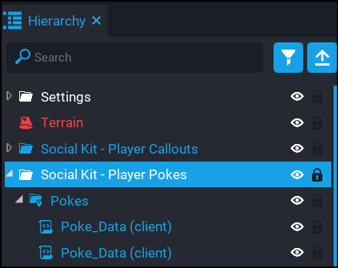
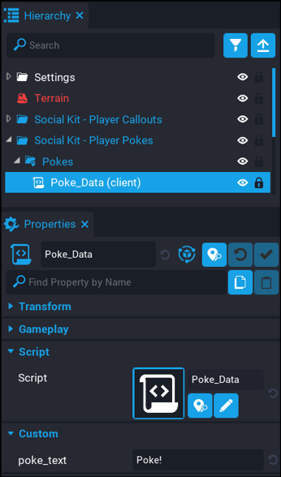

Player Pokes - Creating Callouts
Creating your own custom pokes is really easy. Follow the steps below.
-
To be able to create or remove pokes, you need to deinstance the
Social Kit - Pokestemplate in your hierarchy. -
Expand the
Pokesfolder. In here you will see all the default pokes that come with the component. You can delete or edit the existing ones, and even add more. -
A simple way to add more is to just duplicate the
Poke_Datascript and then modify it with your poke text.


| Setting | Description |
|---|---|
poke_text |
The text that will appear in the dropdown in the Poke UI. |